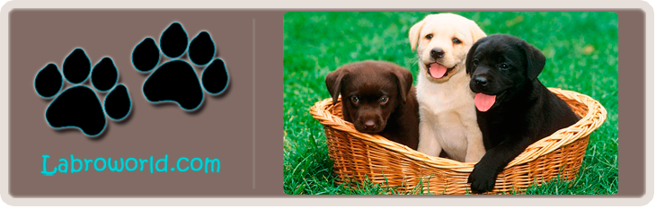

Лабрадор
– это удивительно дружелюбная,
переполненная жизненной энергией
собака, которая чрезвычайно
популярна среди населения
Америки и Европы.
Она легко обучается, а благодаря
своему искреннему желанию
удовлетворить любое желание
человека, даже используется
в качестве собаки-психотерапевта.
